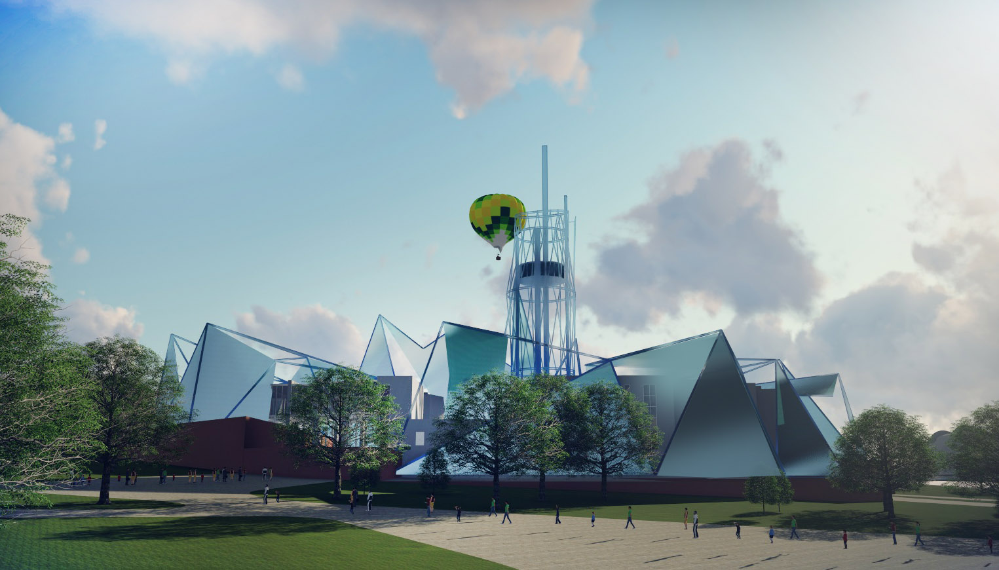

В 2015 году получил диплом о высшем образовании в Казанском Государственном
Архитектурно Строительном Университете
Сфера деятельности - архитектурное проектирование зданий, ландшафтное проектирование,
дизайн интерьеров и проекты реконструкции зданий
Основное направление - комплексная разработка ТЕМАТИЧЕСКИХ ПАРКОВ РАЗВЛЕЧЕНИИ и
других крупных региональных объектов индустрии туризма
Опыт работы: В 2015 году основал компанию ООО «Архитектура Дискавериз» и разработал проект Тематического парка аудиовизуальных аттракционов «Волга Дискавериз» в Верхнеуслонском районе Республики Татарстан.
